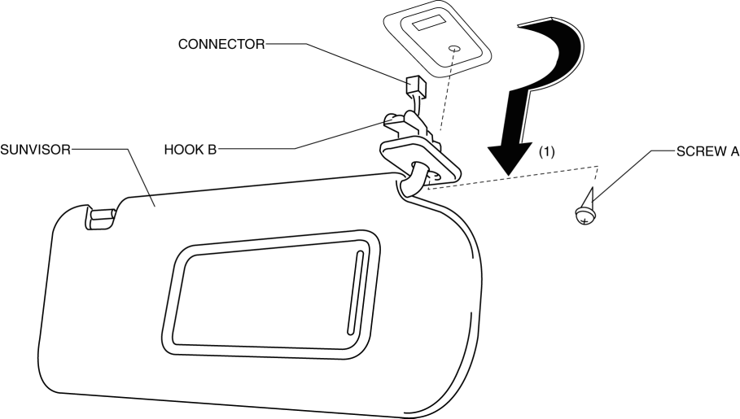
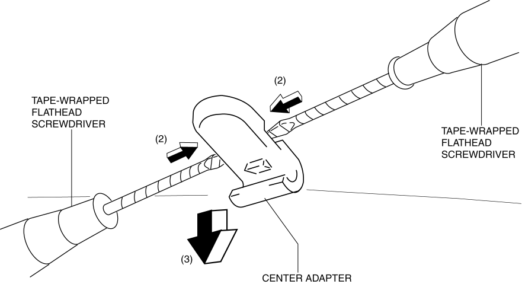

< Previous
Next >
2014 -
Mazda6 -
Body and Accessories
SUNVISOR REMOVAL/INSTALLATION
1. Disconnect the negative battery cable. (See NEGATIVE BATTERY CABLE DISCONNECTION/CONNECTION [SKYACTIV-G 2.5].)
2. Remove screw A.
3. Remove the sunvisor in the direction of the arrow (1) shown in the figure while detaching hook B.

4. Disconnect the vanity mirror illumination connector (with vanity mirror illumination).
5. Press the center adaptor tabs in the direction of the arrow (2) shown in the figure using two tape-wrapped flathead screwdrivers.

6. Remove the center adaptor in the direction of the arrow (3) shown in the figure.
7. Install in the reverse order of removal.
< Previous
Next >
© 2012 Mazda North American Operations, U.S.A.